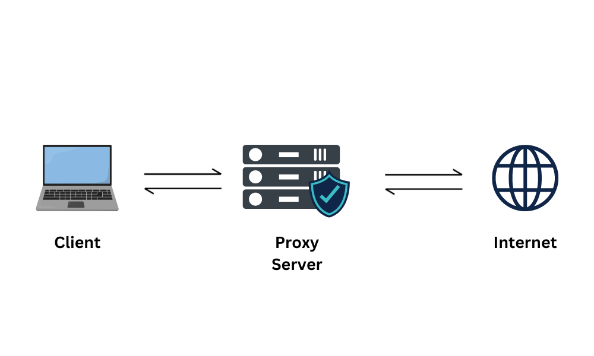
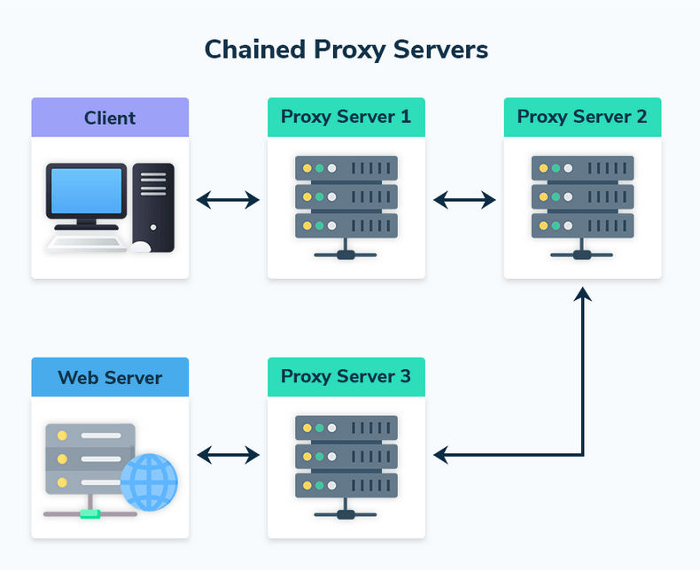
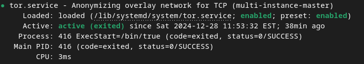
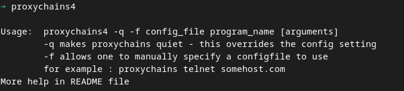
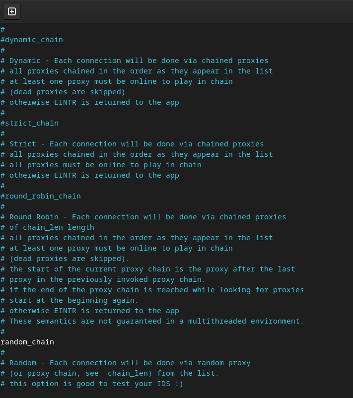
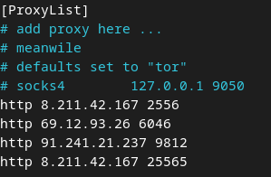
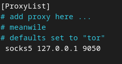
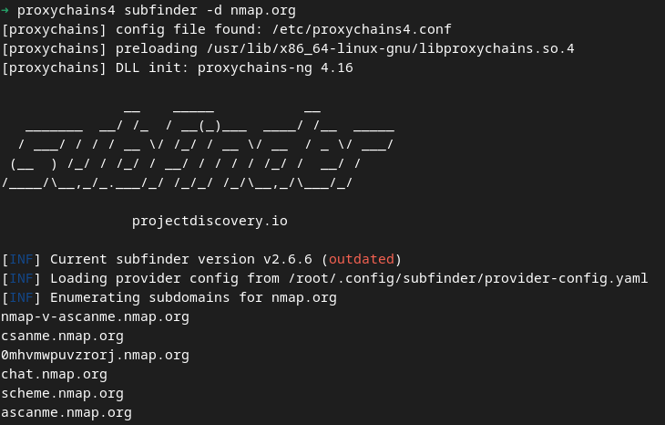

O Proxychains pode ser uma ferramenta essencial no contexto digital atual, onde questões de privacidade, censura e segurança estão em constante evidência, visto a possibilidade de anonimizar conexões na internet ao redirecioná-las por uma cadeia de proxies, mascarando o endereço IP real do usuário.
Conceitos
Proxies
Proxy é um servidor intermediário que atua como um ponto de intermediação entre o dispositivo do usuário e o servidor de destino, redirecionando e gerenciando o tráfego de rede. Ele permite que solicitações de acesso sejam mascaradas, ocultando o IP original do usuário e atribuindo um novo IP associado ao proxy. Além de fornecer anonimidade, os proxies são amplamente utilizados para contornar restrições de acesso, balancear cargas de rede e monitorar tráfego.

Proxychains
Proxychains é uma ferramenta de redirecionamento de tráfego de rede que permite executar programas através de uma cadeia de proxies, proporcionando maior anonimidade e controle sobre as conexões. Sua principal função é interceptar as chamadas de rede de aplicações e as redirecionar por servidores intermediários (proxies), como SOCKS4, SOCKS5 e HTTP(S), na qual são configurados em um arquivo específico.

HTTP/HTTPS
HTTP (Hypertext Transfer Protocol) é o protocolo de comunicação que permite a troca de informações entre navegadores e servidores na web. Ele funciona como um sistema de requisição e resposta, onde o navegador solicita recursos, como texto ou imagens, e o servidor responde enviando os dados solicitados.
HTTPS (Hypertext Transfer Protocol Secure) é a versão segura do HTTP, que utiliza criptografia por meio do protocolo TLS (Transport Layer Security) para proteger os dados transmitidos. Essa segurança é essencial para proteger informações sensíveis, como senhas e dados financeiros, especialmente em transações online.
SOCKS4/SOCKS5
SOCKS4 e SOCKS5 são versões de um protocolo de proxy que atua no nível de transporte da rede, redirecionando o tráfego entre cliente e servidor sem interpretar os dados transmitidos. SOCKS4 suporta apenas conexões TCP, sendo utilizado principalmente para redirecionamento básico de tráfego. Já o SOCKS5 é uma evolução mais avançada, com suporte a conexões TCP e UDP, autenticação por usuário e senha, e compatibilidade com IPv6, tornando-o mais versátil para aplicações modernas que exigem maior flexibilidade e segurança.
Tor
A rede Tor (The Onion Router) é uma rede de comunicação que permite anonimizar a navegação na internet ao encaminhar o tráfego de dados por uma série de nós (servidores) distribuídos globalmente. A comunicação é criptografada em várias camadas, como as camadas de uma cebola, garantindo que a origem, o destino e o conteúdo dos dados sejam protegidos.
Para a criação de sites na rede tor, clique aqui.
Para a criação de um ambiente Windows voltado à OPSEC, na qual todo tráfego passa pela rede tor, clique aqui.
Hands-on
Busca por lista de Proxies
A busca por listas de proxies é essencial para o funcionamento eficaz do Proxychains, pois sua operação depende diretamente da qualidade e disponibilidade dos proxies configurados. Uma lista confiável e diversificada garante maior anonimidade, permitindo que as conexões sejam roteadas por múltiplos servidores intermediários e dificultando a rastreabilidade do tráfego. Vale destacar que servidores proxies podem ver a conexão, mas o que eles conseguem observar depende do tipo de proxy e do protocolo utilizado.
Um proxy HTTP pode ver todo o conteúdo das requisições e respostas não criptografadas, como URLs, cabeçalhos e dados transmitidos. No caso de conexões HTTPS, o proxy só vê o domínio que está sendo acessado (via SNI), mas não o conteúdo, que está protegido pela criptografia TLS.
Proxies SOCKS4 e SOCKS5 atuam em um nível mais baixo, apenas retransmitindo pacotes de dados entre o cliente e o servidor de destino. Eles não interpretam o conteúdo da conexão, mas podem ver os metadados da comunicação, como os endereços IP de origem e destino.
Mesmo em conexões criptografadas (como HTTPS ou VPNs), o proxy final, que encaminha o tráfego para o destino, pode registrar informações como o endereço IP do cliente, os tempos de conexão e o volume de dados transmitidos. Por isso, a confiança no operador do proxy é crucial para garantir privacidade e segurança.
Em redes sensíveis, o uso de ferramentas como TOR pode ajudar a mitigar esses riscos ao adicionar camadas adicionais de anonimidade.
A fins de estudo, foi-se utilizado proxies encontrados nessa proxy-list. Porém, não recomenda-se utiliza-la para fins não didáticos, visto que a mesma não assegura nenhuma segurança e confiabilidade.
Instalando tor
O uso do tor em conjunto com a ferramenta Proxychains é fundamental para ampliar a anonimidade e a segurança nas conexões de rede. Enquanto o Proxychains permite encadear múltiplos proxies, o TOR adiciona uma camada robusta de anonimização ao roteá-las por meio de sua rede distribuída, composta por nós voluntários que dificultam o rastreamento da origem e do destino do tráfego.
Portanto, para a instalação do tor, com permissões administrativas, utilize o comando abaixo:
sudo apt install tor -y
Após a instalação, verifique se o serviço está ativo:
systemctl status tor

Instalando Proxychains
Para a instalação da ferramenta Proxychains, com permissões administrativas, utilize o comando abaixo:
sudo apt install proxychains4
Para validar sua instalação, escreva o comando proxychains4 no terminal e espere pela resposta padrão da ferramenta.

Entendendo o Proxychains
A configuração do Proxychains é feita por meio do arquivo de definição padrão, que se encontra em /etc/proxychains4.conf. Esse arquivo define como a ferramenta opera, permitindo 4 opções de gerenciamento dos proxies, sendo eles:
Cadeia Dinâmica (Dynamic Chain): Com essa configuração, a ferramenta tentará usar os proxies na ordem listada. No entanto, se um proxy falhar, ele será ignorado e a ferramenta passará para o próximo.
Cadeia Estrita (Strict Chain): Cada proxy é usado na ordem listada, do primeiro ao segundo, terceiro, e assim por diante. Se um proxy falhar, toda a conexão será interrompida.
Cadeia em Round-Robin (Round-Robin Chain): Os proxies encadeados são usados de forma circular para distribuir as conexões entre os proxies fornecidos. Cada solicitação de conexão vai para o próximo na lista, e, ao alcançar o final, começa novamente no início.
Cadeia Aleatória (Random Chain) : Como o nome sugere, essa configuração seleciona proxies de forma aleatória para cada conexão. Não segue uma ordem específica e cria um caminho único a cada vez que a ferramenta é executada.
A escolha do tipo de gerenciamento depende da necessidade, como:
Anonimidade: Random Chain pode proporcionar maior anonimidade, por escolher os proxies de forma aleatória.
Confiabilidade: Dynamic Chain oferece resiliência ao ignorar proxies que falham, garantindo assim estabilidade de conexão.

Configuração de proxies
Para seu uso, recomenda-se a configuração mediante a rede tor ou um servidor proxy extremamente confiável. Para configuração, basta colocar, no formato "PROTOCOLO" "IP" "PORTA" ao final do arquivo, o proxy escolhido, por exemplo:

Uso com o tor
Para o uso com o tor, basta, com o serviço tor ativado localmente, redirecionar o proxy para o próprio com o indicativo socks5 127.0.0.1 9050

Para validar seu uso, utilize o comando proxychains4 firefox no terminal, para abrir o navegador sob a ferramenta, e acesse https://check.torproject.org/
Para redirecionar o tráfego de outros programas para o proxychains, basta inserir, no terminal, o comando proxychains NOME_DA_FERRAMENTA, exemplificando: 
Extra: proxy_dns
A configuração proxy_dns, presente em proxychains4.conf, requisita a resolução de DNS através da cadeia de proxies. Isso é importante para manter a anonimidade, pois previne o vazamentos de DNS na qual poderia revelar o endereço IP real por meio de consultas DNS não roteadas pelo proxy. Para validar se há vazamento de DNS em sua conexão, acesse https://dnsleaktest.com.